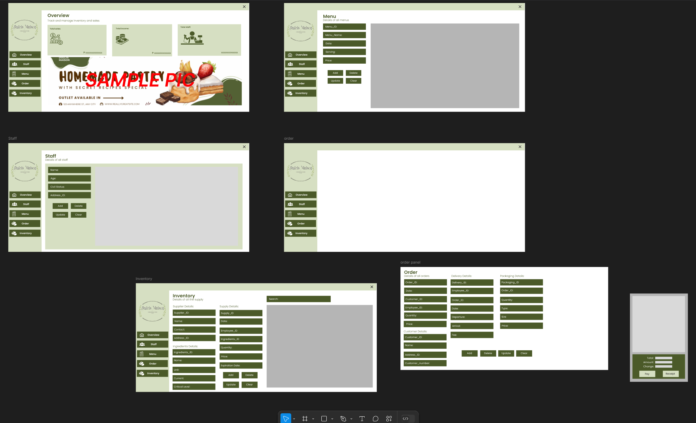

I'm a passionate student doing my best to keep up with the ever-evolving tech world.
Hi, my name is Beau Renfro A. Crieta, a 3rd-year irregular BS Information Systems student at Mapúa Malayan Colleges Mindanao, Philippines. I like to explore cryptocurrency, create designs, and work toward earning certifications in various programming languages. My learning journey is all about experimenting with new technologies, refining my skills through hands-on projects, and continuously growing in the tech space.
Achievements
Guide Questions:
- How does your portfolio show your skills in HTML, CSS, and JavaScript as a CS, IS, or EMC student?
My portfolio effectively demonstrates my proficiency in HTML, CSS, and JavaScript by showcasing well-structured, visually appealing, and interactive web pages. As an Information Systems student, I focus on designing web solutions that enhance user experience while ensuring functionality and responsiveness. Through the use of HTML, I create structured and semantic content, while CSS helps in implementing modern, user-friendly designs. Additionally, I incorporate JavaScript to add dynamic features such as interactive forms, smooth animations, and real-time data updates. By integrating these technologies, my portfolio highlights my ability to develop functional and engaging web applications that align with both technical and business objectives in the IS field.
- What projects, awards, and assignments highlight your progress in the program?
Throughout my academic journey, I have worked on several projects that showcase my growth in web development and information systems. I have developed web-based applications that demonstrate my ability to integrate front-end and back-end technologies, ensuring that user interfaces are both functional and aesthetically appealing. My experience also includes creating database-driven web solutions, where I designed web pages that interact with databases to store, retrieve, and manage data effectively. Additionally, I have applied UI/UX design principles in my projects to improve usability and accessibility. Aside from coursework, I have participated in coding challenges, hackathons, and certification programs to further enhance my skills. These experiences illustrate my dedication to continuously improving my technical and problem-solving abilities while adapting to emerging trends in the industry.
- How does your portfolio creatively showcase your web programming knowledge and experiences?
My portfolio is designed not just as a display of my projects but as an engaging interactive experience that highlights my technical skills and creativity. I ensure that it follows modern web design principles, making it fully responsive and accessible across different devices. To enhance user engagement, I implement dynamic JavaScript features such as animations, interactive elements, and seamless navigation. I also focus on consistency in branding, color schemes, and typography, ensuring that my portfolio reflects both my technical expertise and design sense. Additionally, I incorporate live project demos, allowing visitors to interact with my work in real time rather than just viewing static images. By integrating these elements, my portfolio not only demonstrates my knowledge in web development but also highlights my ability to create practical and user-centered digital solutions, which is essential in the field of Information Systems.
Web Application Work in Progress
Description:
The project aims to develop a website for Dulcis Maison, a bakery business, with an integrated database to manage various operations efficiently. The website will serve as an online platform where customers can explore the menu, place orders, and learn more about the business. Internally, the website will allow staff members to manage the inventory, track orders, update the menu, and keep a record of employees. The website will simplify the management of daily operations while providing customers with a seamless online ordering experience.
Features:
- Overview: The admin panel will display an overview of the bakery's operations, including inventory levels, orders, and staff details.
- Staff Management: The system will allow for the addition, deletion, and updating of staff details such as name, age, contact information, and role.
- Menu Management: Admins can add, delete, and update menu items including details like price and description.
- Order Tracking: The order management feature will allow the tracking of customer orders, with fields for customer details, employee assignment, packaging details, and payment status.
- Inventory Management: The system will track ingredients and supplies, including their quantity, expiration dates, and supplier information, ensuring stock is always updated.
- Customer Interaction: Customers can view the menu, place orders, and receive a receipt. The order details, including packaging and delivery information, will be processed efficiently.
Technologies Used:
- Frontend: HTML, CSS, JavaScript, and a framework
- Backend: Node.js
- Database: Xampp
- Tools: Visual Studio Code for development, Figma for wireframes and mockups
User Flow:
Customer Side:
- Browse the menu, add items to the cart, and proceed to checkout.
- Provide delivery details, and complete the payment process.
- Receive order confirmation and receipt.
Admin Side:
- Manage staff, menu, orders, and inventory through the admin panel.
- Monitor incoming orders, update stock, and track business performance.
Screenshots of the Wireframes & Mockups:
Below are the screenshots of the website's mockups and design:
- Overview Page: Displays key business information and performance metrics.
- Staff Management: Allows the admin to manage staff details.
- Menu Management: Admin can add, delete, and update menu items.
- Order Management: Tracks customer orders, including delivery and packaging details.
- Inventory Management: Manages the supply of ingredients, including expiration and restock alerts.
This project aims to improve the efficiency of Dulcis Maison's operations while providing customers with an easy-to-use platform for managing orders and discovering new products.